System Design
The foundations of system design for interviews: the 7-step framework, estimation, scaling, availability, CAP, networking, load balancers, CDNs, APIs, databases, indexes and replication.
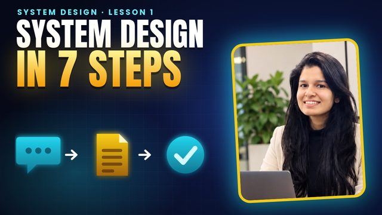
5:40What is System Design? + The 7-Step Interview Framework
"Design Instagram." 45 minutes, a blank whiteboard. Here's exactly how to start. Lesson 1 of the complete System Design course (interview ready): what system design is, high-level vs low-level design, how a real app grows from…
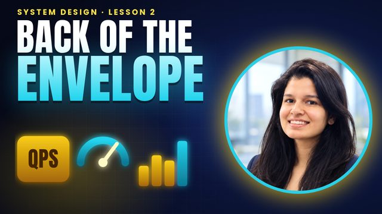
4:43Back-of-the-Envelope Estimation (Latency, QPS, Storage)
One database or fifty? You can't decide without numbers. Here's how to estimate in five minutes. Lesson 2 of the complete System Design course: back-of-the-envelope estimation.
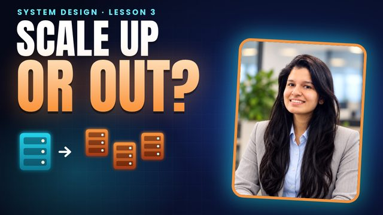
4:36Scalability: Vertical vs Horizontal Scaling, Stateless Servers
SnapLink needs 25,000 requests per second. One server handles 2,000. Now what? Lesson 3 of the complete System Design course: scalability.
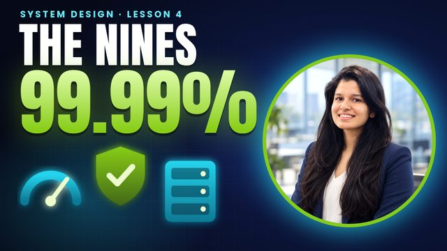
4:19Availability & Reliability: The Nines, SLA/SLO, Redundancy, Failover
Friday night, one disk fails, and SnapLink is down for two hours. Here's how to make sure that never happens. Lesson 4 of the complete System Design course: availability and reliability.
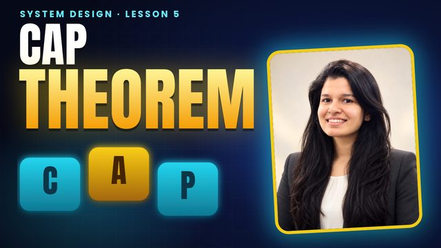
4:37CAP Theorem, PACELC & Consistency Models Explained
Two ATMs, one account, one hundred rupees. Both say yes? That's the CAP theorem. Lesson 5 of the complete System Design course: CAP, PACELC and consistency models.
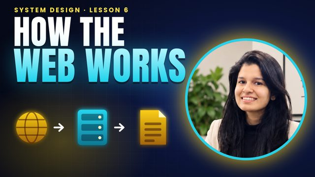
4:46How the Web Works: DNS, TCP vs UDP, TLS, HTTP/2 & HTTP/3
The most famous interview question: what happens when you type a URL and press Enter? Lesson 6 of the complete System Design course: how the web works.
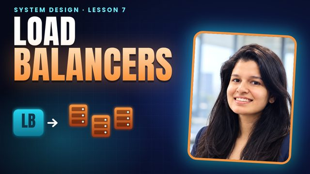
4:10Load Balancers Explained: L4 vs L7, Algorithms, Health Checks
Ten servers, one address. Who decides where each request goes, and what happens when a server dies? Lesson 7 of the complete System Design course: load balancers.
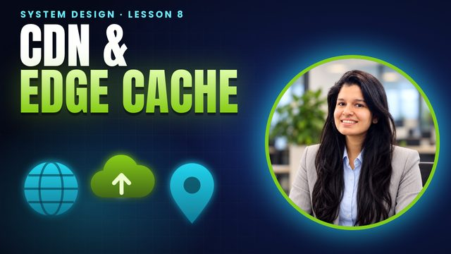
4:30CDN & Edge Caching Explained (Push vs Pull, TTL, Invalidation)
Servers in Mumbai, users in London: every photo crosses the world. Here's how CDNs fix that. Lesson 8 of the complete System Design course: CDNs and edge caching.
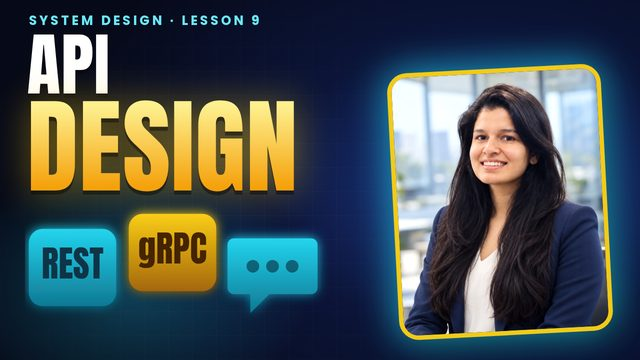
4:56API Design for System Design: REST vs gRPC vs GraphQL, WebSockets, Pagination
Step three of every design interview is the API. Here's how to design one that interviewers love. Lesson 9 of the complete System Design course: API design.
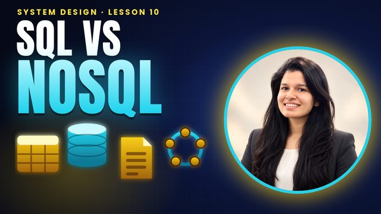
4:29SQL vs NoSQL: How to Choose a Database (4 NoSQL Types)
"NoSQL scales, SQL doesn't." Wrong, and interviewers know it. Here's how to actually choose. Lesson 10 of the complete System Design course: SQL vs NoSQL.
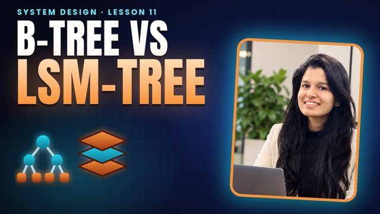
4:38Database Indexes Explained: B-tree vs LSM-tree
A billion rows and one slow query. One index turns it into three page reads. Here's how. Lesson 11 of the complete System Design course: database indexes.
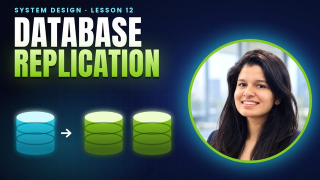
4:18Database Replication Explained: Leader-Follower, Multi-Leader, Quorums
One database server means one failure takes everything down. Replication fixes that, and brings its own traps. Lesson 12 of the complete System Design course: replication.
More lessons are added here as they go live on YouTube.
Notes are free
Create a free account to open the notes for every lesson and tick off what you have finished.